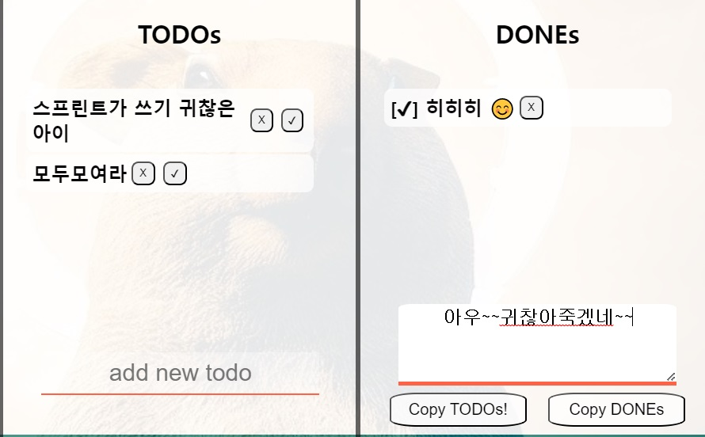
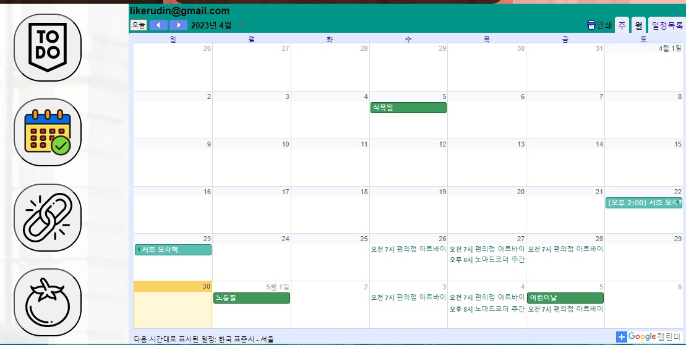
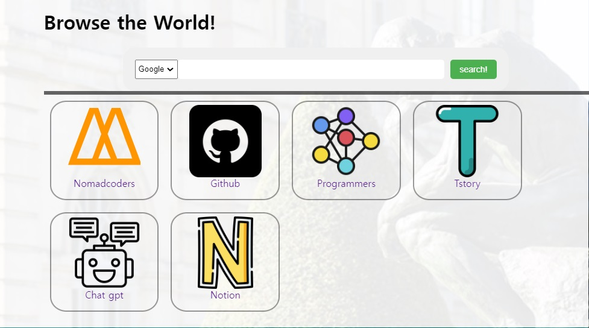
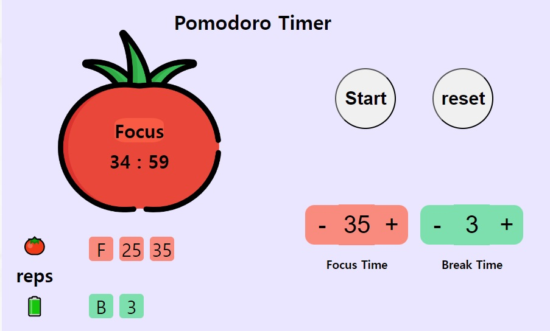

첼린지를 마치고
배운점..?
지난 코코아톡 클론 코딩강의를 들을땐 코드 copy에 급급 했습니다.
남들은 자기만의 독창적인 UI를 적용한것 같았지만, 저는 니코쌤의 코드를 그대로 따라쓰며
한줄마다 한번씩 지워보고, 지우면 어떤일이 생기나, 어떤기능을 하나 확인하며 공부를 했습니다.
또, 전반적으로 나만의 코코아톡 개발 자체에 집중한다기보다는
개발 프로세스를 열심히 살펴보았습니다.
제가 파악한 1인개발 프로세스는 다음과 같습니다.
기획 -> 구현 -> 리펙터링
기획: 만들고싶은 디자인 선정
구현: HTML과 CSS를 통해 해당 디자인을 구현
리펙터링: 코드를 읽기 쉽고 유지보수가 편한 형태로 번경
특히 리펙터링 단계를 열심히 살펴보았습니다.
공통 요소 (중복코드)나 특징을 갖는 html 태그를 찾아 같은 클래스로 묶어주고,
하나의 클래스의 css를 설정함으로써 최대한 적은 코드로 한번에 디자인을 설정해주려고 하는걸 알 수 있었습니다.
또 웹페이지의 HTML 코드를 여러가지 조각의 조합으로 생각하여, 각 조각별 css파일을 생성해
특정 요소의 디자인 코드를 찾기쉽게 분리해주었습니다.
마지막으로, 색상값같이 외우기는 쉽지않으나 자주 반복하여 쓰이는 css 값은
변수로 설정해주어 코드의 재사용을 쉽게 하는것을 알 수 있었습니다.
저는 저 개발 프로세스를 생각하며, 이번엔 직접 코드를 쓰기로 하고
아예 강의를 일찌감찌 듣고 치워버렸습니다.
그리고 처음부터 끝까지 혼자서 코드를 짰습니다.
물론 gpt에게 물어보기도하고, 다른사람의 코드를 참고하기도 했습니다.
하지만 이미 있는 코드를 차례대로 따라 치지 않았습니다.
사실 이미 기본적인 todo list는 지난달에 구현해봤기에,
이렇게 하지않으면 새로 배우는게 없기도 했고요.
이번 첼린지의 목표는 제가 직접 사용할 일정관리 어플을 만드는것이었습니다.
기획:
모멘텀 앱에 들어가서 사용하고싶은 기능을 찾았습니다.
목표로 삼은 기능들은 다음과 같습니다.
모멘텀 앱 만들기
- 0. todolist
- 1. d-day 및 일정관리 캘린더
- 2. 구글 검색엔진 검색기능
- 3. 포모도로 타이머
여기에 추가로 각 컴포넌트를 시야에서 치울수있는 설정까지 구현하게 되었습니다.
TODO
니꼬샘의 순수 TODO와 다른점이있다면, TODO를 array-배열이 아닌 object-객체에 저장합니다.
해당 todo의 key값은 new Date.getTime() 으로 고유한 값을 갖게 했습니다.

todo Copy 버튼
2023/4/30 start!
[]스프린트가 쓰기 귀찮은 아이
[]모두모여라
아우~~귀찮아죽겠네~~
done Copy 버튼
2023/4/30 End!
[✔] 히히히 😊
아우~~귀찮아죽겠네~~
DONE 기능 추가
완료한 일을 파악하는 기능을 TODO List에 추가하고 싶었습니다.
단순히 TASK를 한눈에 파악하는 기능뿐만 아니라 가시적인 "동기부여" 가 되는 앱이 되었으면 했습니다
그래서"끝낸 작업"을 볼 수 있게 DONE List를 추가했습니다.
TODO 오른쪽에 있는 완료 버튼을 클릭하면,
기존의 TODO 저장용 객체에서 해당 TODO의 내용을 복사해 DONE 객체에 저장합니다.
이 과정은 TODO가 입력되었을 때, 객체에 저장되고 화면에 표시되는 것과 거의 비슷한 프로세스로 진행됩니다.
COPY 기능 추가
이 앱을 일일 스프린트 인증에 사용하고 싶었습니다.
gpt에게 물어보니
navigator를 사용하여 복사 붙여넣기를 할수있다고 합니다
navigator.clipboard 객체를 사용하여 TODO와 DONE을 복사하는 기능을 추가했습니다.
Copy Todo (또는 Copy Done) 버튼을 누를 때, 오늘의 날짜와 start (또는 End) 메시지가 함께 복사되도록 하였습니다.
배열을 하나 만들어서 제일 먼저 오늘의 날짜와 start (또는 End)를 push 해주고,
li 태그의 자식 span 의 innerText 성분을 전부 넣어준 다음에,
배열을 문자열로 변환하며, 각 요소 사이에 줄바꿈을 넣어주기 위해 join("\n")을 사용하였습니다.
todoCopyBtn.addEventListener("click", (event) =>{
const story = handleCopyFormSubmit(event);
const todoSpanArray = todoList.querySelectorAll("li > span");
const date = new Date()
const todayStart = `${date.getFullYear()}/${date.getMonth() +1}/${date.getDate()} start!`;
const todoTextArray = [];
todoTextArray.push(todayStart); //오늘 날짜 + start
todoSpanArray.forEach((span) => {
todoTextArray.push(`[]` + span.innerText );
});
const textToCopy = todoTextArray.join(`\n`); //todo 리스트를 한줄씩 입력한 스트링
navigator.clipboard.writeText(textToCopy).then(() =>{
todoCopyBtn.innerText = `Copied!`;
setTimeout(()=>{
todoCopyBtn.innerText = `Copy TODOs!`;
}, 1500)
}).catch((err) => {
todoCopyBtn.innerText = `failed.`;
console.error(`failed to copy text ${err}`);
});
});
STORY 기능추가
일일 스프린트의 마지막에는 오늘의 각오나 소감을 달아주기에, textarea 태그를 이용하여 해당 기능을 하는
입력창을 만들어주었습니다.
위의 코드에서 사용된 array- 배열에
story 택스트를 push 해주는것으로 구현하였습니다.
const todoTextArray = [];
todoTextArray.push(todayStart); //오늘 날짜 + start
todoSpanArray.forEach((span) => {
todoTextArray.push(`[]` + span.innerText );
});
todoTextArray.push(story); // 오늘의 각오, 소감 코멘트
calendar

첼린지 과제중에 있던 cristmas dday 만들기를 바탕으로,
type="datetime-local" 속성을 갖는 input 태그를 통해 dday 를 입력받고,
입력받으면 localStorage에 저장하는 내용으로 코드를 구상하고있었으나, 캘린더가 막막했습니다.
그런데!! 그냥 구글 캘린더를 가져오기로 했습니다.
utility

구글이 제공하는 searchForm 양식을 사용하여 브라우저 검색 기능을 매우 쉽게 구현할 수 있었습니다.
뭔가 아쉬워서 select 태그와 option 태그를 사용해 Bing과 Google 두개의 검색엔진을 선택할 수 있게 했습니다.
또, 코코아 클론에서 배운 대로 제가 자주 이용하는 사이트들의 링크를 추가했습니다.
저의 모멘텀 창이 닫히지 않게 하기 위해 target="_blank" 속성을 모든 링크에 추가했습니다
검색을 하거나 링크를 클릭하면 새로운 창에서 페이지가 열립니다.
pomodoro

포모도로 타이머에는 정지기능이 없다.
개인적으로 이 타이머는 정지 기능이 없어야 한다고 생각해서,
심플하게 25분 집중 카운트와 5분 휴식 카운트 기능만 구현했습니다.
저는 집에 포모도로 타이머가 있는데 (사과 모양이긴 하지만),
태엽 시계처럼 옆으로 감아 동작하며, 한번 태엽을 감아놓으면
물리적으로 잡아두지 않는이상 정지시킬수 없습니다.
원래 조리 시간 측정 도구였기 때문에 정지 기능이 없는 것이 더 적합하다고 생각합니다.
focus와 break 를 구분하는 방식:
숫자 변수를 flag 로 사용했습니다.
reps = 0으로 설정해 두고, 한 번 완료할 때마다 reps가 1씩 증가하게 하여,
reps % 2 연산을 통해 reps가 짝수일 때 집중(25분),
홀수일 때 휴식(5분)을 실행하도록 설정했습니다.
시간 조절기능 추가
29일 저녁에 모각코 채널에 접속 중이던 4조의 future님과 클로이님에게 베타 테스트를 요청했습니다.
30분 간격으로 사용하고 싶다는 의견이 있어서 집중과 휴식 시간을 조절하는 기능을 추가했습니다.
가운데 있는 숫자는 input 태그로 15~50, 1~25범위의 숫자 설정이 가능합니다.
focus의 버튼은 5분단위, break의 버튼은 2분단위로 번경됩니다.
form의 submit을 사용하고 싶지 않아서 "input" 이벤트를 사용했습니다.
*input의 값이 변경되면 바로 감지하는 이벤트.
reps 추가
todo list와 같은방식으로 토마토 밑에 가로로 reps가 기록되도록 하였습니다.
각 focus ul과 break ul은 localStorage에 array로 저장되며,
reps 또한 저장됩니다. 새로고침 하더라도
현재 focus, reps 의 순서가 기억됩니다.
CSS
css 클래스 사용 및 psuedo selector 에대해 다시 생각하게되었습니다.
일단 BEM 표기법과 꼼꼼한 class 명명의 중요성을 알고있긴 하지만,
dom구조를 이용한 psuedo 선택자를 사용하는것이 굉장히 편리하였기 때문에
"기본 태그명"을 혼용한 선택자를 많이 사용했습니다.
ex).parent > div
그런데 위의 선택자 때문에 HTML 코드를 번경할 때 마다 문제가 발생하였습니다.
">"는 바로 직계 아들딸 태그만 선택해줍니다.
그렇기때문에 HTML의 구조를 바꾸면 css 선택자 및 디자인 코드가 무력화되는 경우가 많았습니다.
HTML태그에 최대한 class만을 사용하도록 하기로 했습니다.
종종 id를 사용할지언정 ">" 선택자는
바로밑의 자식이 너무 명확한경우를 제외하면 사용하지 않기로 했습니다.
ex) ul과 li, select와 option 등에는 사용해도 괜찮을것 같습니다.